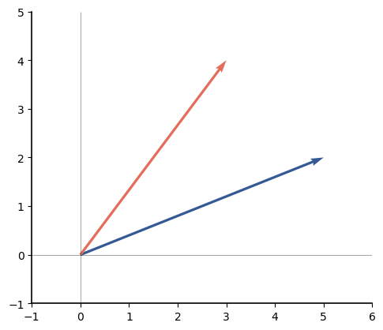
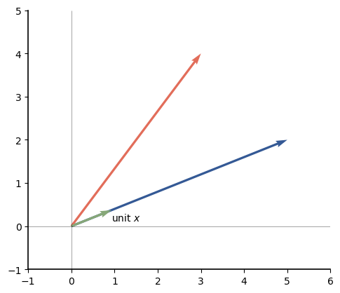
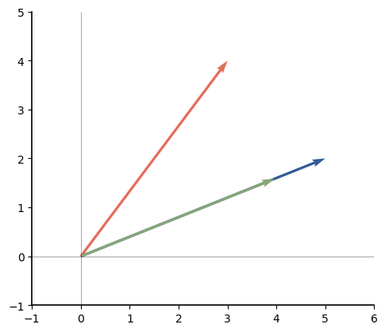
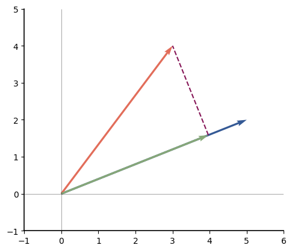
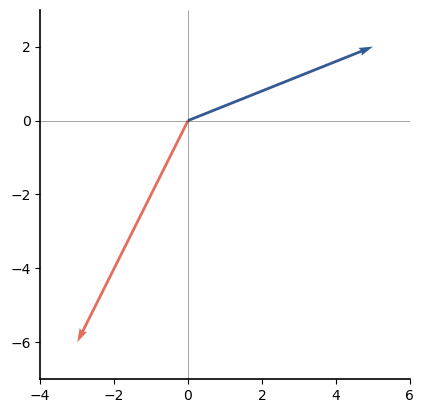
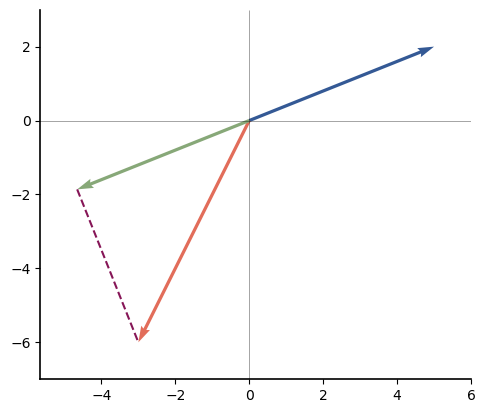

Vector Correlation and Projection
Contents
13.2. Vector Correlation and Projection#
13.2.1. Vector Correlation#
We would like to find a relation between vectors that is similar to correlation, in the sense that we get a value of 1 when the vectors point in the exact same direction, and a value of -1 when the vectors point in the exact opposite direction. We would like the value of 0 to occur when the vectors are orthogonal to each other in some sense. To find such a relation, we start with an observation about two-vectors. Given vectors \(\mathbf{a}\) and \(\mathbf{b}\), the Law of Cosines can be used to show that
where \(\theta\) is the angle between \(\mathbf{a}\) and \(\mathbf{b}\). Now note the following properties of \(\cos \theta\):
\(\cos \theta = 1\) if \(\theta =0\); i.e., if \(\mathbf{a}\) and \(\mathbf{b}\) point in the exact same direction.
\(\cos \theta = -1\) if \(\theta =\pi \); i.e., if \(\mathbf{a}\) and \(\mathbf{b}\) point in the exact opposite direction.
\(\cos \theta = 0\) if \(\theta = \pm \pi/2\); i.e., if \(\mathbf{a}\) and \(\mathbf{b}\) are orthogonal.
Rewriting the equation for the dot product, we have
We use this to define vector correlation that holds for any \(n\)-vectors:
DEFINITION
- vector correlation:#
The correlation between \(n\)-vectors \(\mathbf{a}\) and \(\mathbf{b}\) is
\[\begin{equation*} r= \frac{{\mathbf{a}} \cdot \mathbf{{b}} }{ \Vert\mathbf{{a}}\Vert \,\Vert\mathbf{{b}}\Vert}. \end{equation*}\]
Then the angle between two vectors is given by
DEFINITION
- angle between vectors:#
The angle between \(n\)-vectors \(\mathbf{a}\) and \(\mathbf{b}\) is
\[\begin{equation*} \theta = \cos^{-1} \left( \frac{{\mathbf{a}} \cdot \mathbf{{b}} }{ \Vert\mathbf{{a}}\Vert \,\Vert\mathbf{{b}}\Vert}\right). \end{equation*}\]
This formula for the angle holds for \(n\)-vectors even if \(n >2\).
Note that \(\theta =0\) occurs if and only if \(\mathbf{a} \cdot \mathbf{b} =0\). Thus we define orthogonality for vectors as
DEFINITION
- orthogonal vectors:#
Vectors \(\mathbf{a}\) and \(\mathbf{b}\) are orthogonal if and only if
\[\begin{equation*} \mathbf{a} \cdot \mathbf{b} = 0. \end{equation*}\]
This definition has properties that are similar to those of Pearson’s correlation, but the connection is actually much deeper than that. First, let’s write vector correlation in terms of the arithmetic operations on the elements of \(\mathbf{a}\) and \(\mathbf{b}\):
Now let’s treat \(\mathbf{a}\) and \(\mathbf{b}\) as vectors of data features and compute Pearson’s correlation between them:
For the special case \(\overline{\mathbf{a}} = \overline{\mathbf{b}}=0\), this simplifies to
So vector correlation and Pearson’s correlation have the same exact form if the elements of each vector average to zero.
13.2.2. Projecting a Vector Onto Another Vector#
Consider the problem of taking a vector \(\mathbf{y}\) and writing it as a linear combination of some known set of vectors \(\mathbf{x}_0, \mathbf{x}_1, \mathbf{x}_{m-1}\). Then one of the first goals might be to determine what how much of the vector \(\mathbf{y}\) is in the direction of each representation vector \(\mathbf{x}_i\).
Consider the example \(\mathbf{y}\) and \(\mathbf{x}_i\) shown in Fig. 13.1.
Fig. 13.1 Example vector \(\mathbf{y}\) and a representation vector \(\mathbf{x}_i\).#
If we want to determine how much of \(\mathbf{y}\) is in the direction of \(\mathbf{x}_i\), we can draw a vector along \(\mathbf{x}_i\) and define the error as the length of the line from the head of that vector to the head of \(\mathbf{y}\). Three such error lines are shown as the red dotted and solid lines in Fig. 13.2. From inspection, the shortest error line is the one that is orthogonal to \(\mathbf{x}_i\), which is shown by the solid line.
Fig. 13.2 Example vector \(\mathbf{y}\) and a representation vector \(\mathbf{x}_i\), along with three error lines.#
Then it is easiest to determine the length of the vector along the direction of \(\mathbf{x}_i\) that minimizes the error vector if we rotate the vector \(\mathbf{x}_i\) onto the \(x\)-axis, as shown in Fig. 13.3. Then from the right triangle, we see \(y_i = \| \mathbf{y} \| \cos \theta\). We call this length the scalar projection of \(\mathbf{y}\) onto \(\mathbf{x}_i\). If \(|\theta|>90^\circ\), then the scalar projection will be negative. This occurs if \(\mathbf{y}\) needs to be represented in terms of \(-\mathbf{x}\).
Fig. 13.3 Example vector \(\mathbf{y}\) and a representation vector \(\mathbf{x}_i\), rotated to make it easier to see the length of the vector along \(\mathbf{x}_i\) that minimizes the error to \(\mathbf{y}\).#
Compare the formula for \(y_i\) with \( \mathbf{y} \cdot \mathbf{x}_i = \|\mathbf{y}\|\,\|\mathbf{x}_i \| \cos \theta\). Then we can rewrite the formula for \(y_i\) as
We use this form in our definition for projection:
DEFINITION
- scalar projection#
Given \(n\)-vectors \(\mathbf{x}\) and \(\mathbf{y}\), the scalar projection of \(\mathbf{y}\) onto \(\mathbf{x}\) has magnitude equal to the length of the vector in the direction of \(\mathbf{x}\) that minimizes the error to \(\mathbf{y}\). The sign is positive if that component of \(\mathbf{y}\) is in the same direction as \(\mathbf{x}_i\) and negative if not. It is given by
\[\begin{equation*} ac{ \mathbf{y} \cdot \mathbf{x}}{ \| \mathbf{x} \|}. \end{equation*}\]
13.2.3. Normalizing a Vector#
We can rewrite the formula for the scalar projection \(y_i\) as
Let \(\tilde{\mathbf{x}} = \frac{\mathbf{x}}{\left \|\mathbf{x} \right \|}\). Then we can see that
where the second line follows from a property of the norm that we previously introduces. We say that \(\mathbf{x}\) is a unit vector:
DEFINITION
- unit vector:#
A vector \(\mathbf{x}\) is a unit vector if \(\| \mathbf{x} \| =1.\)
Thus, we can also write the scalar projection of \(\mathbf{y}\) onto \(\mathbf{x}_i\) as \(\mathbf{y} \cdot \tilde{\mathbf{x}}_i.\)
The vector projection is the vector in the direction of \(\mathbf{x}_i\) that has length equal to the scalar projection \(\mathbf{y} \cdot\tilde{\mathbf{x}}_i.\) Since \(\tilde{\mathbf{x}}_i\) is a unit vector in the direction of \(\mathbf{x}_i\), then the vector projection is simply
DEFINITION
- vector projection#
Given \(n\)-vectors \(\mathbf{x}\) and \(\mathbf{y}\), the vector projection of \(\mathbf{y}\) onto \(\mathbf{x}\), denoted \(\operatorname{proj}_{\mathbf{x}} \mathbf{y}\), is the vector in the direction of \(\mathbf{x}\) that minimizes the error to \(\mathbf{y}\) and is given by
\[\begin{equation*} \operatorname{proj}_{\mathbf{x}} \mathbf{y} = \frac{\mathbf{y} \cdot \mathbf{x}_i } { \left \Vert \mathbf{x}_i \right \Vert ^2} \mathbf{x}_i. \end{equation*}\]
Example
Let \(\mathbf{x}=[5,2]^T\) and \(\mathbf{y}=[3,4]^T\).
import numpy as np
from plotvec import plotvec
x=np.array([5,2])
y=np.array([3,4])
plotvec(x,y)

Note that the angle between these vectors is
from numpy.linalg import norm
print(f'{np.rad2deg(np.arccos(x@y/norm(x)/norm(y))) :.1f} degrees')
31.3 degrees
Let’s find and visualize the projection of \(\mathbf{y}\) onto \(\mathbf{x}\). First we show the vector \(\tilde{\mathbf{x}}\):
xt=x/norm(x)
plotvec(x,y,xt)
import matplotlib.pyplot as plt
plt.annotate('unit $x$', (xt[0], xt[1]-0.25));

Then the scalar projection of \(\mathbf{y}\) onto \(\tilde{\mathbf{x}}\) is
spy = y@x / norm(x)
spy
4.270992778072193
To get the (vector) projection of \(\operatorname{proj}_{\mathbf{x}} \mathbf{y}\), we just need to multiply \(\tilde{\mathbf{x}}\) by the scalar projection:
vpy=spy*xt
vpy
array([3.96551724, 1.5862069 ])
plotvec(x,y,vpy)

Note that the error line from the vector projection to \(\mathbf{y}\) is orthogonal to \(\mathbf{x}\):
plotvec(x, y, vpy)
plt.plot([vpy[0], y[0]], [vpy[1], y[1]],
color='C4', linestyle='dashed')
[<matplotlib.lines.Line2D at 0x7faf72ad50a0>]

Example
Here is an example vector \(\mathbf{z}\) whose projection onto \(\mathbf{x}\) is in the opposite direction of \(\mathbf{x}\):
x=np.array([5,2])
z=np.array([-3,-6])
plotvec(x,z)

The scalar projection of \(\mathbf{z}\) onto \(\mathbf{x}\) is
spz = z@x / norm(x)
spz
-5.0137741307804005
Since \(\mathbf{z}\) points in the direction of \(-\mathbf{x}\) instead of \(\mathbf{x}\), the scalar projection is negative. The vector projection \(\operatorname{proj}_{\mathbf{x}} \mathbf{z}\) is
vpz=spz*xt
vpz
array([-4.65517241, -1.86206897])
These vectors and the vector projection of \(\mathbf{z}\) onto \(\mathbf{x}\) are shown below. The error line from \(\mathbf{z}\) to the projection of \(\mathbf{z}\) onto \(\mathbf{x}\) is also shown as a dashed line.
plotvec(x, z, vpz)
plt.plot([vpz[0], z[0]], [vpz[1], z[1]],
color='C4', linestyle='dashed')
[<matplotlib.lines.Line2D at 0x7faf72d74b80>]

In the next sections, we show how to use projections to find alternate representations for a vector. Then we show how to use this to transform time-domain vectors into the frequency domain and to reduce the dimension of a data set in an optimal way.